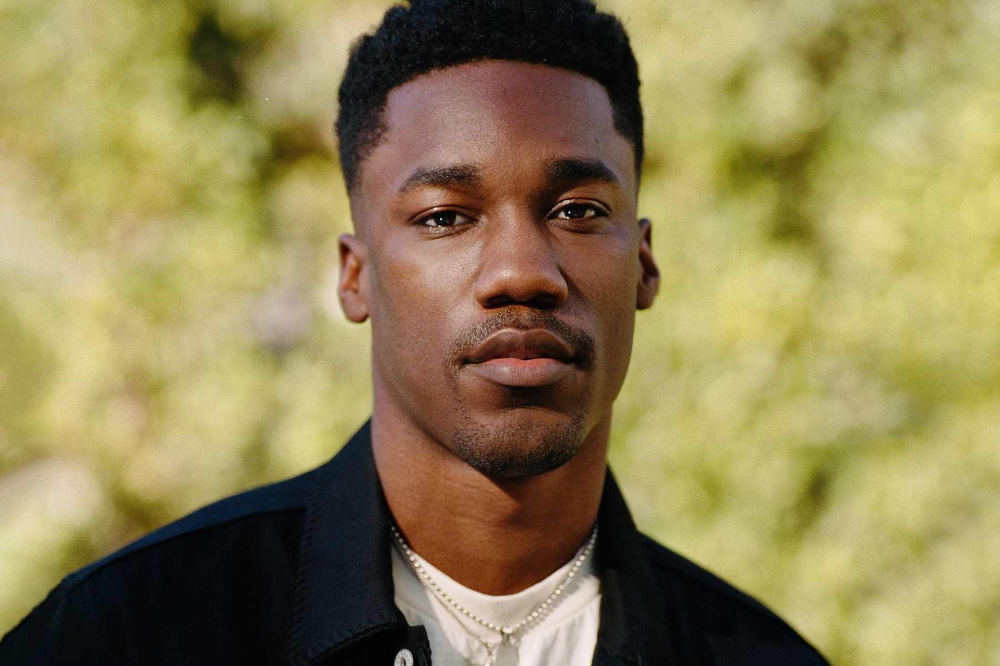
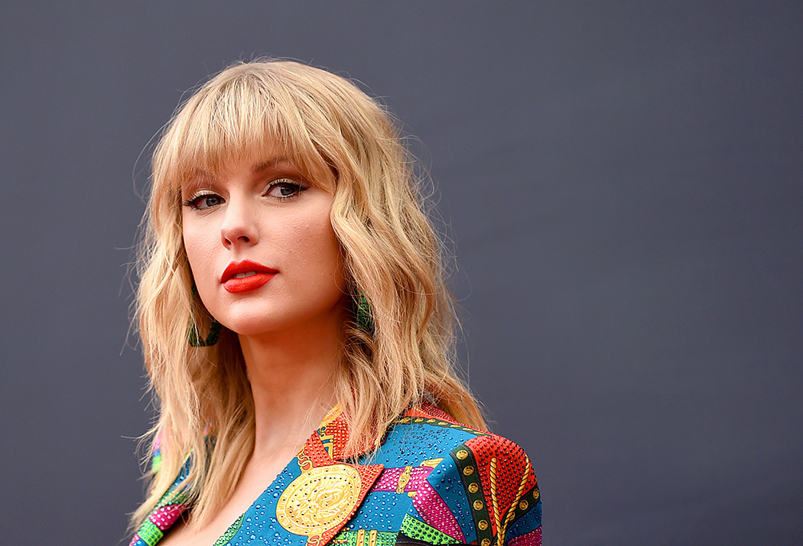

However, according to Anne-Marie, the song is all about her experiences of that special year of 2002.
“Break My Heart” about “finally being in a happy place and knowing this new person is amazing. But then thinking: ‘Nothing else compares to this, and what if this ends and it breaks my heart?

Breaking up is already hard enough to do, but remembering the anniversary of your split is a different type of pain. Giveon explores his feelings on the one-year anniversary of his breakup in "Heartbreak Anniversary."
“Too Good At Goodbyes,” as he is afraid of getting hurt once more. He is tired of all the games and he is giving up on love.

'ME!' is a song about embracing your individuality and really celebrating it and owning it," Taylor told Robin when the song was released on April 26.